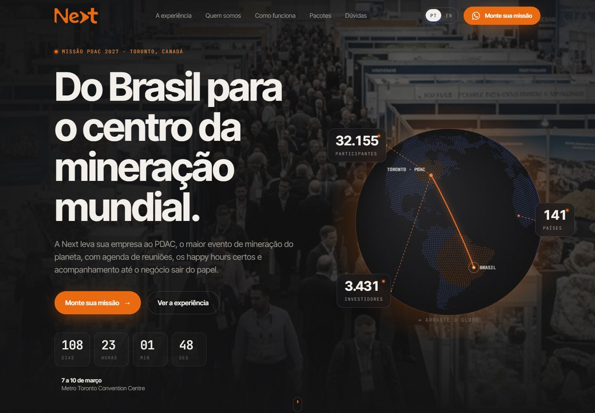

Page 1
Visual escuro
Conexão global
Uma apresentação imersiva, com o Brasil e o Canadá conectados por um globo interativo. Combina impacto visual com uma explicação completa da missão.
- Globo interativo e números do evento logo na abertura.
- Galeria da experiência, equipe e etapas da viagem.
- Pacotes e montagem da missão com prévia da mensagem.
A sensação desta proposta
Explorar Page 1 Tecnologia, alcance internacional e acompanhamento próximo em cada etapa.